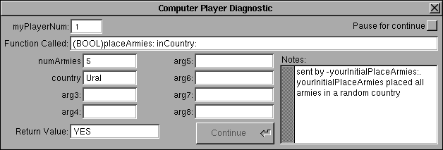

Risk
Computer Player Help
This section has not been updated since verion 0.97.
This section of the Help describes the computer players which come with Risk.
The only players in this version of Risk are Diagnostic and Chaotic. Source code is included for both

Diagnostic is a very stupid player, but it implements a status panel which let's one monitor the computer player's operation on a very high level. (The panel shows which ComputerPlayer utility was called last, with what arguments, and with what result.) The panel is shown below. The strategy of Diagnostic is to do the bare minimum. He chooses countries, and places armies, but will never attack. This player is meant to show how to incorporate .nib files into a computer player and to be subclassed by people developing new strategies.
This is what the panel looks like after Diagnostic has placed some armies
Chaotic is my first attempt at a full featured player. As the name suggests, it is very random. It will try (at the beginning of the game) to get a country in each continent. Once it succeeds (or fails) to do this, it picks random countries. When placing armies it places them in random countries, but chooses only from its countries with at least one enemy neighbor. When attacking, it attacks at most one enemy country from each country that it can attack from, how long it attacks from a particular country is somewhat random. When fortifying it tries to move armies from countries without enemy neighbors to countries with enemy neighbors. It turns in its best set of cards whenever it can.